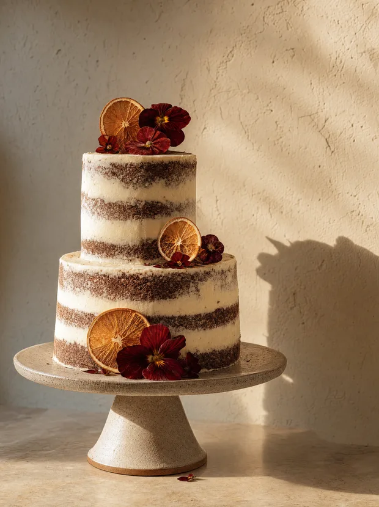

Bolo de festa
Massa assada no dia anterior à entrega, recheio feito na hora, cobertura sem gordura hidrogenada. Aro de 15 a 30 cm, um ou dois andares.
- A partir de
- R$ 180 aro 15, serve 15 fatias
- Prazo mínimo
- 4 dias
- Sabores fixos
- cacau e amêndoa, milho com coco, limão com merengue, doce de leite com castanha
- Sem glúten
- sob consulta, acréscimo de 15%